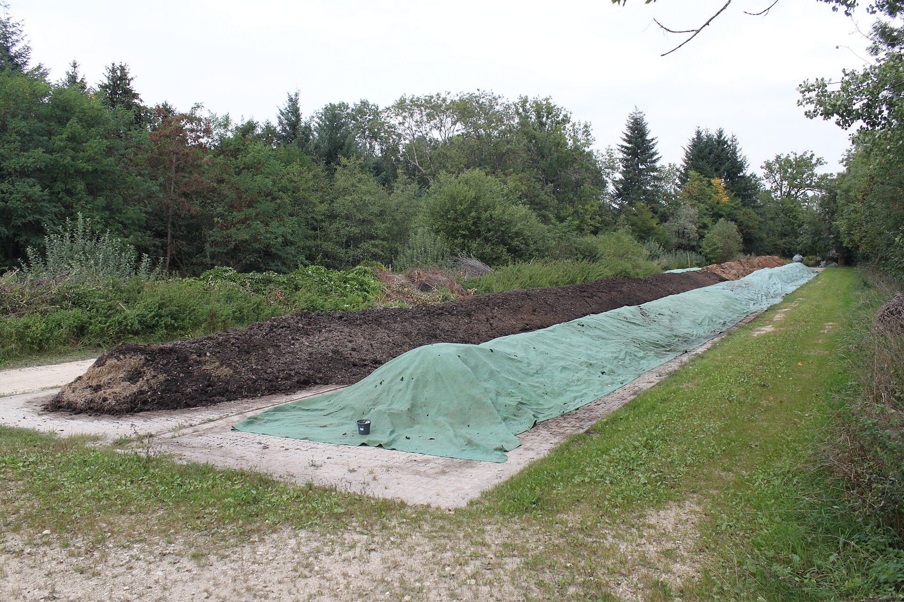

Compost Heat for Home Heating: Can You Warm Your House?
Can compost heat warm your home? Learn about compost heating systems, thermal mass walls, and passive solar strategies.
Compost Heating Basics
A hot compost pile can reach temperatures of 130-160°F in the center. While this heat is not enough to warm a whole house, it can be harnessed for small-scale applications.
Thermal Mass Wall Systems
- Bury compost-filled containers inside a wall cavity — the heat radiates into the room slowly over weeks
- This is most effective in small, well-insulated structures like greenhouses or tiny homes
Greenhouse Compost Beds
A thick compost bed (3-4 feet deep) under a greenhouse floor can raise soil temperatures by 10-20°F, extending your growing season significantly.
Realistic Expectations
Compost heat is best used for small-scale applications: warming seedling trays, extending greenhouse seasons, or pre-warming soil in spring. It will not replace a primary heating system.